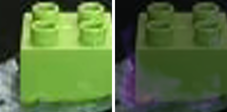
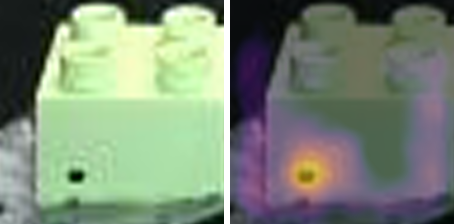
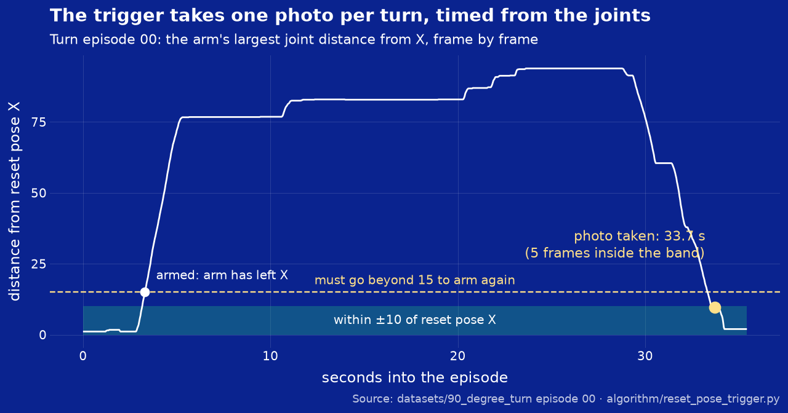
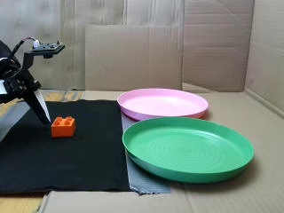
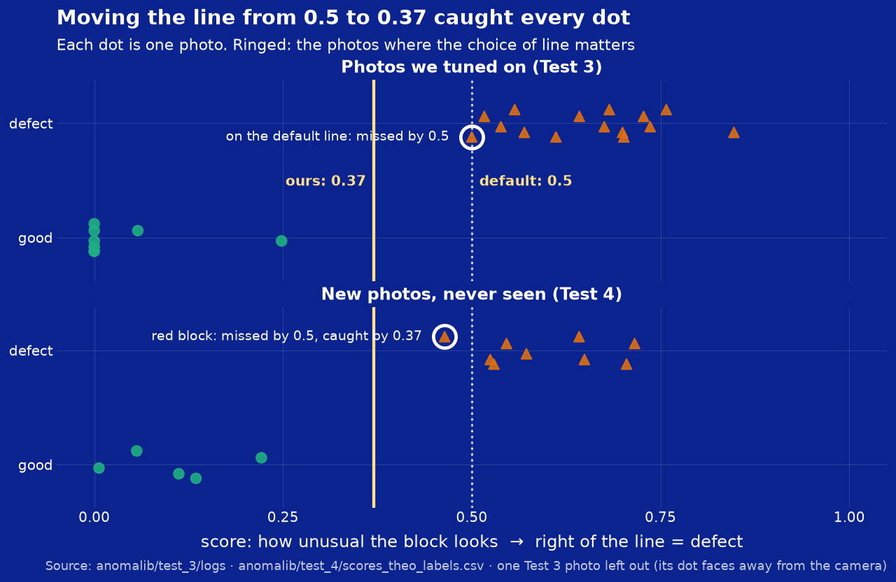

Anomaly Scores
how Adapt spots a defect
What the model sees
Each tile shows one block as the model sees it (left) and how unusual each part looks to the model (right). Good blocks stay dark. On a block with a dot, the bright spot lands right on the dot, even on a photo the model had never seen.



 unusual
unusualSame colour scale for every tile, so bright means the same thing in each. Model: PatchCore, final version.
Made by scripts/make_heatmaps.py.
The Anomalib cycle
Anomalib inspects every face of the block before the arm decides where it goes: the trigger picks the moment, the crop keeps only the block, and PatchCore scores it. Even when the first face shows a defect, the cycle carries on until all four faces are scored, so the whole inspection is shown. The faded steps are the arm's part, covered on the Robot Arm page.
ARCHITECTURE.md §2.
Choosing the camera
We gave all three cameras the same blocks and measured the gap: how far apart the good and defect scores sit. Bigger is safer. Below zero means they overlap, so some good blocks look worse than some defects.



Test 2.1: 5 good and 7 defect photos per camera · anomalib/test_2/Test 2.1/findings.md
The threshold: one line decides in or out
The threshold · the line that decides if a block is in or out
Every block gets one score. Below the line, it's good and goes to the green bowl. Above the line, it's a defect and goes to the pink bowl. One number, one decision, and everything the arm does next depends on it.
The score · how sure the model is that something's wrong
The model learned only from good blocks. The score says how unusual a new block looks next to them. Near 0, it looks just like the good blocks. The higher it goes, the surer the model is that something's wrong.
The lever · move the line to stay clear of noise
Photograph the same block twice and its score moves a little: the light shifts, the camera adjusts, the block sits a millimetre to one side. A block far from the line keeps its verdict. A block close to the line can flip. So we put the line where it's furthest from both groups: halfway between the highest good score (0.25) and the lowest defect score (0.50), at 0.37. Anomalib's default of 0.5 sat right on top of a defect.
Pushing scores away from the line · make good and defect look as different as possible
- The right camera. The side camera, which kept good and defect furthest apart.
- Only the block. Every photo is cropped to the block, so the gripper and the table can't add noise.
- Trained the way it's used. Every training photo was taken with the arm parked at the same pose and cut with the same crop as the photos the robot takes.
- Every colour. Training covered all five block colours, so a colour on its own doesn't look unusual.

| Default line 0.5 | Our line 0.37 | |
|---|---|---|
| Dots caught, photos we tuned on | 14/15 | 15/15 |
| Dots caught, new photos | 8/9 | 9/9 |
| Good blocks passed, both sets | 13/13 | 13/13 |
Tested on photos it had never seen
We locked the line at 0.37 before looking at any new photo, then scored 14 new photos once. Each photo was labelled good or defect by eye before any score existed, so neither the line nor the labels could be nudged after seeing the results. Every dot was caught (9/9) and every good block passed (5/5). The hardest call was a faint mark that Theo had labelled a defect by eye; the model lit up on the same spot.

Labels written before scoring: anomalib/test_4/theo_labels_2026-11-19_1254.txt · results and the label history: anomalib/test_4/findings.md